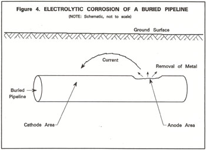
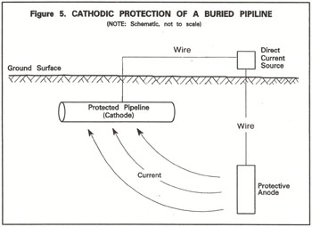
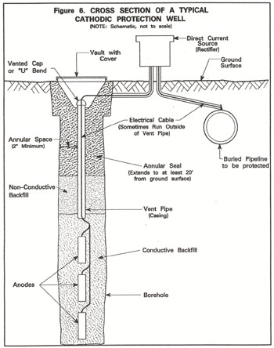

|
Most wells in California are constructed to extract groundwater, inject water, or monitor groundwater conditions. Other, less common types of wells include cathodic protection wells. Cathodic protection wells, sometimes called 'deep groundbeds,' house devices to minimize electrolytic corrosion of metallic pipelines, tanks, and other facilities in contact with the ground.  For the purpose of these standards, electrolytic corrosion is defined as the deterioration of metallic objects by electrochemical reaction with the environment. The electrolytic corrosion process is illustrated in Figure 4 for a metallic pipeline in a soil-water environment. This process gradually weakens the pipeline and can cause its failure. In Figure 4, an electric potential is induced on the surface of the pipeline as a result of variations in the concentrations of salts in the soil and water surrounding the pipeline. This potential results in an electric current in the soil-water electrolyte. Current flows from an "anode area" on the pipeline to a "cathode area" on the pipeline. Metal is removed from the anode area by the current.  "Cathodic protection" is a term used for certain measures taken to prevent or minimize electrolytic corrosion of metallic equipment and structures. Cathodic protection devices redirect current to flow from a "sacrificial" anode to the soils-water electrolyte, instead of from an anode area on a pipeline or other metallic structure to be protected. The protective anode's role is to corrode in place of the metallic object it is designed to protect, as shown in Figure 5. The protected facility is made to be a permanent cathode by use of cathodic protection devices. Thus, the facility is said to be "cathodically protected." Protective or sacrificial anodes can be placed close to ground surface or at significant depth. Anodes have been placed at shallow depths in horizontal and vertical arrays for many years. Shallow arrays are often not well suited for metropolitan areas because of land requirements, or suited for areas where electrical interference may be high. Deep vertical anode installations, usually referred to as "cathodic protection wells," were first developed and used during the 1940s. They were developed in response to the constraints of shallow anode arrays. Cathodic protection wells are widely installed to protect metallic objects in contact with the ground from electrolytic corrosion. Such objects include petroleum, natural gas, and water pipelines, and related storage facilities; power lines; telephone cables; and switchyards. Cathodic protection wells are sometimes used to control electrolytic corrosion in large water wells. Many cathodic protection wells have been constructed to protect pipelines that transport natural gas or other "hazardous" materials. The Natural Gas Pipeline Safety Act, Public Law 90-481 adopted by Congress in August 1968, provides requirements for cathodic protection of certain pipelines. Most cathodic protection wells in California are located in areas where underground pipelines or "conveyance" systems are numerous and must be protected. These areas include:
Few cathodic protection wells exist in California north of Sacramento.  Many cathodic protection wells, as llustrated in Figure 6, have been constructed by:
Individual designs of cathodic protection wells vary. The protective anodes of a cathodic protection well usually corrode away with time. Thus a cathodic protection well's anodes determine the well's useful life. Anodes are usually designed to last 15 to 20 years. There has been an increasing tendency to construct cathodic protection wells with large diameter vent pipe or casing so that anodes can be replaced through the casing. Anode replacement through casing eliminates the need to drill replacement wells when anodes have been expended. Serious electrical interference problems can occur where cathodic protection networks criss-cross one another or are too close to one another. Also, stray currents produced from electrical transmission lines and other equipment can sometimes interfere with the operation of cathodic protection systems. Interference problems are usually most pronounced in urban areas. Corrosion control coordinating organizations have been formed in areas of California to overcome system interferences and other problems. Most organizations are affiliated with or are chapters of the National Association of Corrosion Engineers. Corrosion control organizations represent the majority of utilities and other groups that install cathodic protection devices, including cathodic protection wells. Organization members coordinate the installation and operation of cathodic protection facilities with the goal of minimizing problems of electrical interference. Four organizations that deal with Central and Southern California are:
No coordinating organizations function in coastal counties north of San Francisco or in the northeastern part of the State. Unfortunately, not all who install and operate cathodic protection facilities work with a corrosion coordinating organization. Those not associated with an organization are usually individuals or local agencies that are sometimes unaware of the existence of other installations. Non-coordinated facilities can seriously interfere with one another electrically. Cathodic protection wells, along with other types of wells, can allow groundwater quality degradation to occur. Improperly constructed or destroyed cathodic protection wells can constitute a preferential pathway for the movement of poor-quality water, pollutants, and contaminants. Cathodic protection wells constructed with gravel backfill to land surface are particularly conducive to the movement of poor-quality water, pollutants, or contaminants. Water and electrolytes are sometimes introduced into cathodic protection wells through vent pipes, or gravel fill in the annulus, to keep wells functional where natural electrolytes are lacking. Such a practice could be considered "waste disposal" and may be illegal if poor-quality water is used. Permanently inactive cathodic protection wells pose a threat for the movement of poor-quality water, pollutants, and contaminants, and should be properly destroyed. Permanently inactive cathodic protection wells are a threat to groundwater quality because they become dilapidated with time, are sometimes forgotten, and are sometimes used for waste disposal. Many cathodic protection wells have small diameter vent pipes that prevent entry by persons and most animals. However, large vent pipe sizes can pose a serious safety threat if left open at land surface. The California Legislature enacted legislation in 1949 directing the California Department of Water Resources to develop recommended water-quality protection standards for the construction and destruction of wells. The Legislature amended the Water Code in 1968 to require standards for cathodic protection wells. Cathodic protection well standards for California were first published in 1973 as DWR Bulletin 74-1, Cathodic Protection Well Standards: State of California. Standards presented here replace those contained in Bulletin 74-1. Additional discussion on the history of well standards is contained in the "introduction" section of this supplement (Bulletin 74-90) and Bulletin 74-81, Water Well Standards: State of California. The following are recommended minimum standards for construction, alteration, maintenance, and destruction of cathodic protection wells in California. They only serve as minimum guidelines toward ensuring cathodic protection wells do not constitute a significant pathway for movement of poor-quality water, pollutants, and contaminants. These standards do not ensure a cathodic protection well will perform its corrosion protection function adequately. The functional requirements for cathodic protection wells may conflict with the application of certain standards for the protection of water quality. Consequently, some compromise has been made between well function and resource protection in the development of these standards. These standards are arranged in a format similar to the Water Well Standards. Since many of the standards that apply to water wells also apply to cathodic protection wells, many references are made in these standards to the Water Well Standards. Standards that apply only to cathodic protection wells or that require emphasis for cathodic protection wells, are discussed in detail in these standards. |
| Table of Contents Next Section |